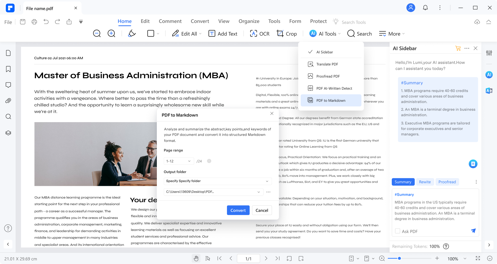

采购合同从收件到归档的一条链——我用 PDFelement 嵌进工作流的实战
以前处理一份采购合同要反复切换四个工具、三次发邮件，现在把 PDFelement 插进流程中间，AI 比对差异、自动识别表单、统一安全策略，15 分钟搞定从收件到归档的全链路。
以前那套流程，我到底卡在哪
我在一家 20 人出头的小团队管采购，每周固定要处理 3~5 份供应商合同，外加不定期的询价单、验收表这类表单。这些东西全是 PDF 格式——不是我选的，是行业惯例。
以前的流程是这样的：邮箱收 PDF → 用系统自带阅读器打开逐字扫 → 发现对方改了条款，切到 Word 手动标注 → 存一份改后版发邮件给供应商 → 收到回签版再打印出来手签 → 扫描上传到企业网盘归档。一套下来，一份合同至少 40 分钟，多的时候一小时。
卡顿点其实很具体：
比对差异全靠眼睛。 对方发来的合同通常是在他们的模板上改了三五个条款——付款比例从 30% 改成 20%、违约金比例加了 5%、保密期从 3 年拉长到 5 年——这些改动藏在 40 页文档里，我得对着我们的标准模板逐段翻，漏过一次就是坑。
表单得手动补字段。 供应商发过来的询价单经常是扫描版或者半结构化的 PDF，只有文字和线条没有可填写的框。以前我要么打印出来手填再扫描，要么在 Word 里重新排一遍再转 PDF——哪种都不轻松。
安全策略全靠自觉。 有时候合同里带敏感数字，我记得加密了，下次同事接手就忘了——团队每个人的 PDF 加密全凭自己，没个统一准星。
把 PDFelement 插进流程的哪一环
我后来把这条链拆成了四段，每段的衔接点都钉死，PDFelement 正好卡在中间两个环节：
第一段：收件（邮箱）→ 第二段：审核与标注（PDFelement）→ 第三段：协同与回签（企业微信 + PDFelement Cloud）→ 第四段：归档（企业网盘）。
先说最核心的第二段，PDFelement 干了三件事——它的官网定位就是专为这类 PDF 工作流设计的全功能工具：
AI 比对，把 40 分钟缩到 40 秒
对方合同一来，我把它和我们的标准模板在 PDFelement 里一起打开，用工具栏 AI 标签页的「比对文档」功能——选好原始文档和对比文档，点一下开始。几秒后侧边栏就列出了所有差异点，正文里用颜色高亮：黄色是新增、红色是删除、绿色是修改后的内容。
上周有个供应商把付款节点从"到货后 7 天"改成了"到货验收完成后 30 天"，藏在第 27 页一个不起眼的段落里。换作以前我大概率会漏——现在侧边栏直接跳过去，点一下就定位到原文。
AI 比对的准确程度我测过，拿两份手动改过的合同逐字核对，它没漏掉任何一处。它不理解"为什么要改这条"的商业意图——比如对方为什么要拉长付款期——但找出"改了什么"这件事，比人眼靠谱得多。

表单自动识别，告别重排
询价单、验收表这类表单，以前 PDFelement 打开后是不能直接打字的——只有线条和文字框，没有真正的表单字段。现在我切到 Forms 标签页，点一下「表单字段识别」，PDFelement 自动扫描整份 PDF，把横线区域变成文本框、方框变成复选框、签名行变成签名字段，识别完每个字段周围都有彩色边框。
识别准确率对结构清晰的表单很高。扫描件如果边框模糊，可能漏识别一两个字段，手动在 Forms 工具栏补一下就行——不会像以前那样整张表重排。
我还发现一个好用的路子：如果供应商发来的不是 PDF 而是 Word 版，我直接用 PDFelement 的「从文件创建」转成 PDF，再跑一遍表单识别，比在 Word 里手动加表单快多了。
形状标注，替代了一半的 Word 手动标注
以前发现问题点，我得切到 Word 里画红框、加箭头、写批注。现在直接在 PDFelement 里用形状工具——矩形框用淡黄色半透明填充圈住重点、箭头指向错误位置、云朵形状加批注气泡。保存后对方打开 PDF 一眼就能看到问题在哪，批注鼠标悬停就能看完整内容。
这个功能看起来小，但省了两次工具切换和一次复制粘贴——每份合同累计下来，又是三五分钟。
协同和安全，靠 Team 版统一
单独一个人用 Pro 版也能跑通上面这套，但我后来还是拉着团队一起上了 Team 版——原因很简单：安全策略不能靠每个人自觉。
Admin Console 里我给全团队推了三条硬规则：所有 PDF 保存时必须加密码、禁止保存明文 PDF、禁用 AI 联网功能。这三条覆盖到每个人本地的 PDFelement 设置，用户改不掉。审计日志还能看到谁在什么时候打开了什么 PDF、做了什么操作——虽然没人真去逐行查，但出问题时有据可依。
Team 版还有个省心的点：授权池灵活。我们买了 20 个授权，任意 20 个成员能用，换人时旧成员的授权自动移给新的，不用一个个手动激活。批量部署也比 Pro 版方便——Admin Console 里能下到嵌入了 TeamID 的安装包，个人版则可直接从下载渠道获取，分发下去安装完直接登录团队账号就激活了，不用每个人单独输序列号。
流程里最容易断链的两个环节
跑了两个月，这条链里有两个地方我发现容易出问题，专门调整过：
一是 AI 比对的准确性边界。 扫描件转的 PDF，如果文字层不干净，AI 比对会漏识别差异。解决办法是比对前先用 PDFelement 跑一遍 OCR 把文字层清干净——这个动作 10 秒钟，但能避免漏改条款。
二是云同步的权限控制。 PDFelement Cloud 默认会自动同步打开过的文件。我们团队合同带敏感信息，我在 Admin Console 里直接把 Cloud 同步禁掉了——敏感文档不允许上传云端，全部走本地加密 + 企业网盘归档。这个开关藏得有点深，在 Admin Console 的安全策略里，我后来翻了PDFelement文档才找到。
效果和边界
跑通之后，一份合同从收件到归档的平均时间从 40 分钟降到了 15 分钟左右——少了两次手动复制、一次 Word 重排、一次扫描上传。团队 12 个人长期用 PDFelement，买一套 Team 版比每人各买一份 Pro 版省了大概 40% 的费用。
但这套流程也不是万能的。我总结了两个不划算的场景：
合同金额超过百万或者涉及知识产权、竞业限制这类关键条款——AI 比对和风险识别能帮你筛出重点，但最终审核还是得找律师或者法务同事过一遍。AI 识别风险条款是基于常见模式匹配，它不了解我们这个行业的特殊惯例。
纯扫描版表单且格式极不规范——比如一张歪歪扭扭的传真件，OCR 后文字层乱成一团，表单识别准确率会大幅下降。这种时候还是得手动加字段或者退回让对方发电子版。
我怎么选版本的
个人用选 Pro 版就行——买断或订阅都有，一人最多 3 台设备。团队超过 2 个人长期要用 PDF 工具，直接上 Team 版划算：授权池灵活、Admin Console 统一安全策略、批量部署省心，整体比每人各买 Pro 版省 30~50%。100 人以上或者需要 SSO、私有化部署、定制 API，那就得联系销售谈 Enterprise 版了。
入手的话，先申请 30 天免费试用，让 IT 和核心用户先跑一周真实流程验证，再决定买哪个版本。部署完给团队做个 30 分钟的快速培训——基础操作 + 安全策略说明就行，不用搞太复杂。
说回我们这条链：邮箱收 PDF → PDFelement 里 AI 比对差异、表单识别、形状标注 → 企业微信协同确认 → 本地加密保存 → 企业网盘归档。每一步的衔接点都钉死了，中间不会断。跑了两个月，没出过一次漏改条款或者明文加密的问题。
PDFelement 的中文资料我同步维护在三个代码仓库里，主更新放在 GitHub，国内访问走 Gitee 和 GitCode 更快，内容都是实时同步的。